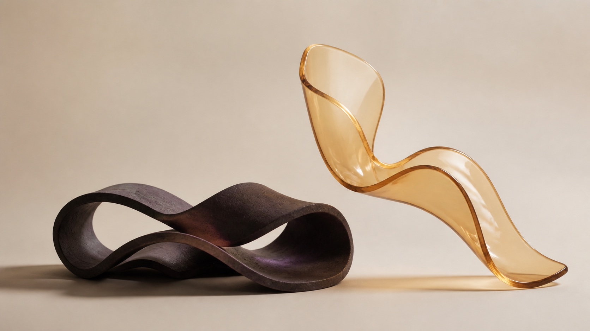

Mike, this is Your Zodiac
March 12, 1984 · 3:47 AM · Austin, Texas
Your four fixed frequencies, your listening record, and ways to explore what matters now.
Your fixed map
Your Personalized Frequencies
Calculated from your exact birth moment.
Zodiac Experience
What this can feel like
You feel more like yourself.
Your own signal becomes easier to recognize in ordinary life. Decisions feel more like yours. You notice what feeds you, what drains you, what is mutual, and when an opening is worth taking.
“I feel like ME. I feel like the person I’ve been trying to get back to for so long without forcing anything.”
What members reportedSeven outcomes from our 52-week study+
Among members who used Zodiac as designed, averaging at least nine minutes a day and keeping every frequency at 15% or more:
This was an internal, self-coded study, not a clinical trial. These are population results, not a promise about one member or when something will happen.
Listening
Time and Balance
Monday, July 27 to Sunday, August 2 · Your local time
Vitality is the only frequency below the 15% guide. Balance describes the mix, not a score.
Listening guide9 minutes a day on average · every frequency at 15%++
The study baseline was 63 minutes across a full week, with every frequency receiving at least 15% of listening. Missing a day is fine.
All-time listening5h 10m total · 2h 20m balanced+
Vitality has received the least time overall. More Vitality in future listening moves your lifetime mix toward balance.
How you access your signal
Your Bands
Your frequency is what your signal is. Your band is how you naturally access it.

Grounding and steadiness
Core · LoveMotion and drive
Vitality · AbundanceHow your bands workTwo Root · two Solar Plexus+
Bands are not levels. Everyone uses all four. Yours describe the access points that tend to feel more natural in each part of life.
Your calculation
How Your Map Was Calculated
Your birth moment, translated into four exact frequencies.
We begin with the sky at the exact moment and place you were born.
March 12, 1984 · 3:47 AM
Austin, Texas
Calculated with Swiss Ephemeris from your exact date, time, and location.
248+ positions and relationships resolve into the four frequencies shown above.
The final translation uses an algorithm rooted in the Sri Vidya Mantra Lineage from Southern India.
Raw planetary positionsView the astronomical inputs used in your calculation+
Rx means retrograde. These are the astronomical inputs used in the frequency calculation.
Optional explorations
Experiences to Explore
Use your map on a real question. Choose what matters now.
Vitality · 554 HzShould I say yes?Use your energy signal before you commit.+
- Choose One commitment you are unsure about.
- Try Picture the actual week, or take one small reversible piece.
- Notice Feeds me, costs me, needs another approach, or still unclear.
Why it fits: Vitality is about energy. Your Solar Plexus band works through a small, reversible action.
Core · 406 HzWhat do I really want?Use your identity signal when the answer feels crowded.+
- Choose One decision about who you are or what is yours to do.
- Try Give the question one quiet minute without arguing either side.
- Notice Yes, no, not yet, or nothing clear. Every answer is information.
Why it fits: Core is about identity and purpose. Your Root band gives the question solid ground.
Love + AbundanceIs this worth pursuing?Use both signals when another person is part of the opening.+
- Choose One opportunity that depends on a conversation or relationship.
- Try Let the relationship question settle, then take one small step.
- Notice What becomes clearer about the person, the opening, and the timing.
Why it fits: Love reads the connection. Abundance reads the opening and its timing.
Questions
Frequently Asked Questions
How much should I listen?+
The study baseline was at least nine minutes a day on average, or 63 minutes across a full week, with every frequency at 15% or more. That is guidance, not a rule.
What does balance mean?+
Balance means each frequency has at least 15% of your listening for the week. It describes the mix, not a score or a requirement for a result.
What if I miss a day?+
Missing a day is fine. More time while staying balanced was a population pattern in the study, not a promise about your result or schedule.